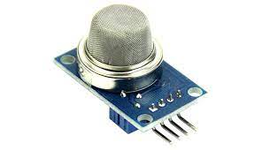
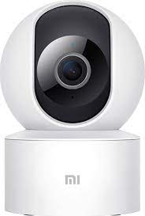

Selecting an IoT infrastructure
IoT stands for Internet of Things. It refers to the growing network of physical devices, such as smartphones,
appliances, and vehicles, that are connected to the internet and can collect and share data. These devices are
equipped with sensors and other technologies that allow them to communicate with one another and with external
systems, making it possible to collect and analyze large amounts of data in real time.
The IoT has the potential to revolutionize many industries and aspects of daily life, by making it possible to
monitor and control devices remotely, automate processes, and make better-informed decisions. Some examples of
IoT applications include:
- Smart homes: IoT devices can be used to control lighting, heating, and other systems in a home,
making it
possible to adjust settings remotely and automate certain tasks.
- Industrial automation: IoT sensors can be used to monitor industrial equipment and processes,
enabling
predictive maintenance and other efficiency improvements.
- Healthcare: IoT devices can be used to monitor patients' vital signs, track their activity levels,
and
remind them to take their medication.
- Transportation: IoT devices can be used to track the location of vehicles, monitor traffic patterns,
and
improve the efficiency of logistics operations.
While the IoT has the potential to bring many benefits, it also raises important security and privacy concerns.
Because the data collected by IoT devices can be sensitive, it is important to ensure that it is transmitted and
stored securely. Also, the widespread use of IoT can lead to the generation of vast amount of data that can be
overwhelming, creating need for efficient and powerful analytics and data management systems to extract useful
insights.
Typical IoT Setup For A Greenhouse
| Project |
Greener Organix Greenhouses |
| Objectives |
Provide precise control of the greenhouse environment. The IoT system will collect data, analyze
that
data, and control the greenhouse environment as necessary to ensure that all plants are subjected to
optimal growing conditions. |
| Goals |
Identify the basic IoT infrastructure you will need to include in your IoT solution for:
- Data Collection and Control
- Local Connectivity
- Remote Connectivity
- Remote Data Ingestion, Analytics, and Backend Applications
- Operational Constraints
|
| A) IoT Infrastructure |
What would be a typical IoT infrastructure setup for our greenhouses?
- Sensors: These devices are installed within the greenhouse to collect data on various
environmental and plant-related factors, such as temperature, humidity, soil moisture, and
light
levels.
- Gateway: This device serves as the hub for the sensor network, collecting data from the
sensors
and sending it to the cloud for storage and analysis. The gateway may also have the
capability
to perform local processing and decision-making based on the sensor data.
- Cloud platform: This is the backend system that stores and processes the sensor data, and
provides the means for users to access and analyze the data. The cloud platform may also
host
applications that can be used to remotely control and monitor the greenhouse.
- User interface: This could be a web or mobile application that allows users to access and
interact with the sensor data and control the greenhouse remotely.
- Networking infrastructure: Depending on the size of the greenhouse and the desired level of
connectivity, this could include a range of technologies such as Wi-Fi, cellular, or
low-power
wide-area networks (LPWAN).
|
| B) Constraints |
What are some constraints we may be dealing with within our greenhouse operation?
- Environmental conditions: Greenhouses rely on the sun for light and heat, so you will need
to
consider factors such as temperature, humidity, and light levels in order to create a
suitable
environment for your plants. You may also need to consider the impact of weather events such
as
storms or extreme heat.
- Space constraints: Greenhouses are typically limited in size, so you will need to carefully
plan
the layout and use of space to maximize plant growth and productivity.
- Resource constraints: Greenhouses require a range of resources such as water, nutrients, and
energy to maintain optimal growing conditions. Managing these resources effectively can be a
challenge, particularly in areas where water or energy are in short supply.
- Labour constraints: Greenhouse operations often require a significant amount of manual
labour,
such as planting, watering, and harvesting. Finding and retaining skilled labour can be a
challenge,particularly in areas with a tight labour market.
- Financial constraints: Running a greenhouse operation can be expensive, especially if you
are
starting from scratch or investing in new technology. You will need to carefully manage your
budget and consider the costs of materials, labour, and utilities in order to stay
financially
viable.
|
Babak Reihani Presentation
Take Away
To connect a sensors such as (humidity, motion, water leakage, gas, door sensor etc. ) to a mobile application,
you would first need to connect the
sensors to a Zigbee network. Once the sensors are connected to the Zigbee network, you can connect the network
to the cloud using a Zigbee to cloud gateway. This gateway will handle the communication between the sensors and
the cloud platform, sending data from the sensors to the cloud in real-time. The
mobile application will communicate with the cloud platform using a RESTful API, the app will authenticate
with the cloud and fetch the sensor data that it needs to display. On the app, you can visualize the data by
displaying example humidity in real-time on various visualizations such as graphs or charts. Also,
the app could allow user to interact with the sensors by sending commands to the device via cloud.
Some of the Devices
|
Humidity Sensor
|
Bulb Sensor
|

Gas Sensor
|
| 
360 Camera
|
Door Sensor
|
Zigbee Gateway
|
Connected IOT Device